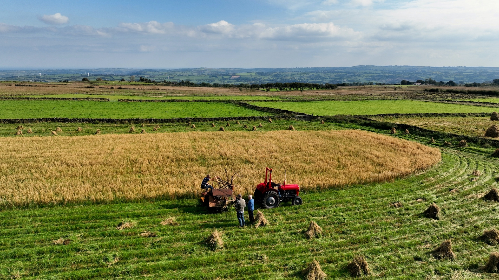
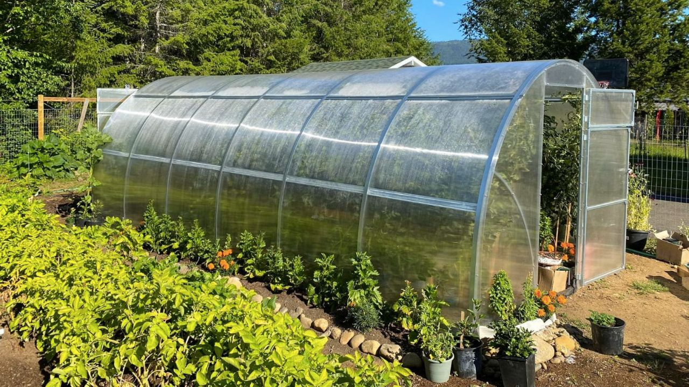

Welcome to the freshly grown products of Cluj-Napoca!
Purely grown by gentle sunlight, richly mineralized water and the powerful nutrients of the Romanian soil,
freshly grown produce arrives at your door before you can put your apron on!
Order your favorite fruits and vegetables and do your body the favor of energizing itself with a fresh, healthy meal.
Are you a local farmer and want to work with us?
Contact us at contact@freshly.grown.ro

